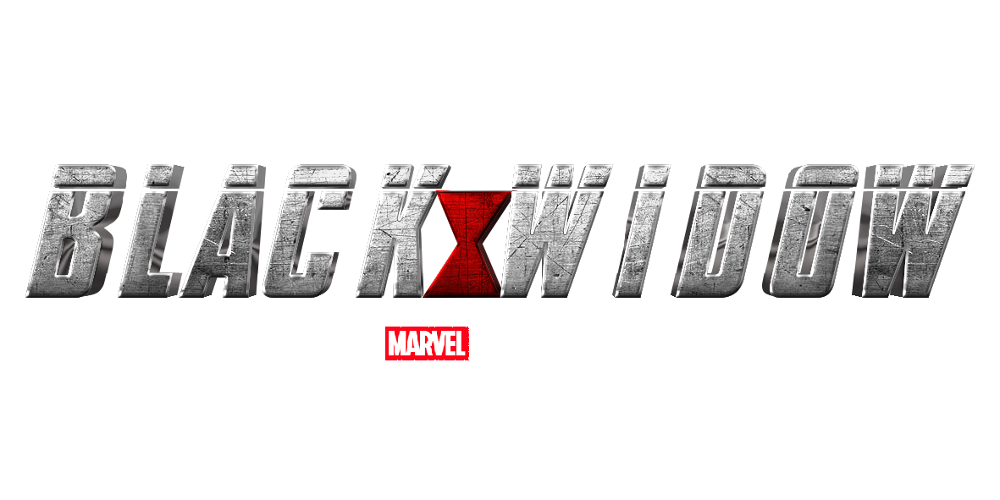

American superhero created by Marvel Comics featuring the character of the same name. Produced by Marvel Studios and distributed by Walt Disney Studios Motion Pictures, it is the 24th film in the Marvel Cinematic Universe (MCU). The film was directed by Cate Shortland from a screenplay by Eric Pearson, and stars Scarlett Johansson as Natasha Romanoff / Black Widow alongside Florence Pugh, David Harbour, O-T Fagbenle, Olga Kurylenko, William Hurt, Ray Winstone, and Rachel Weisz. Set after the events of Captain America: Civil War (2016), the film sees Romanoff on the run and forced to confront her past. Lionsgate Films began developing a Black Widow film in April 2004, with David Hayter attached to write and direct. The project did not move forward and the character's film rights had reverted to Marvel Studios by June 2006. Johansson was cast in the role for several MCU films beginning with Iron Man 2 (2010), and began discussing a solo film with Marvel. Work began in late 2017, with Shortland hired in 2018. Jac Schaeffer and Ned Benson contributed to the script before Pearson was hired. Filming took place from May to October 2019 in Norway, Budapest, Morocco, Pinewood Studios in England, and in Atlanta, Macon, and Rome, Georgia. Black Widow broke several pandemic box office records and grossed over $379 million worldwide.
